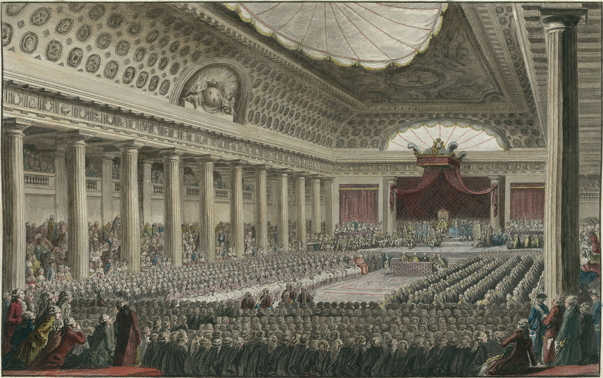
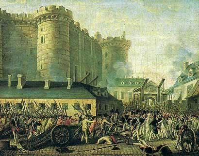
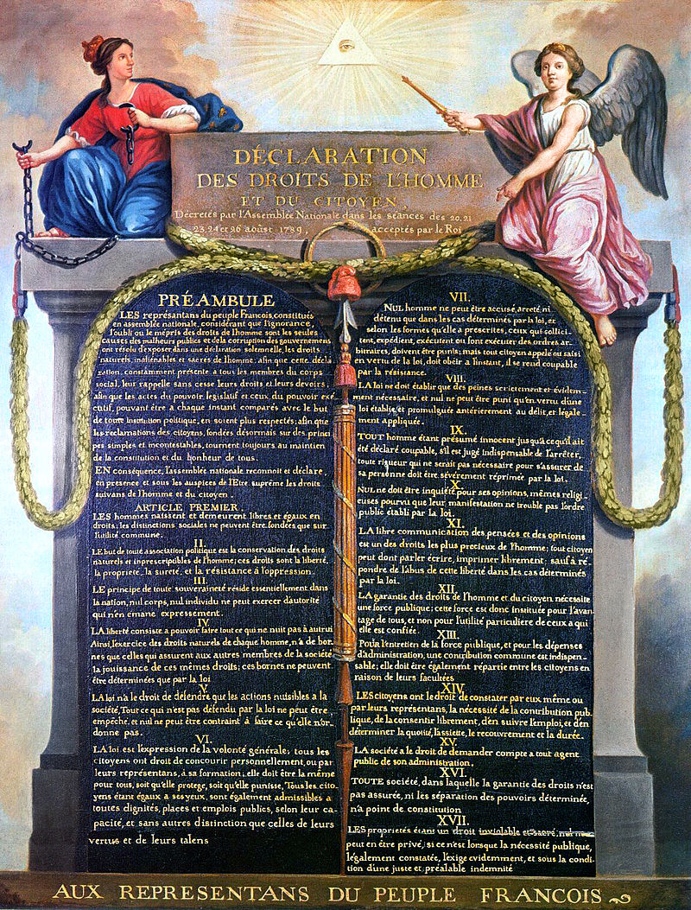
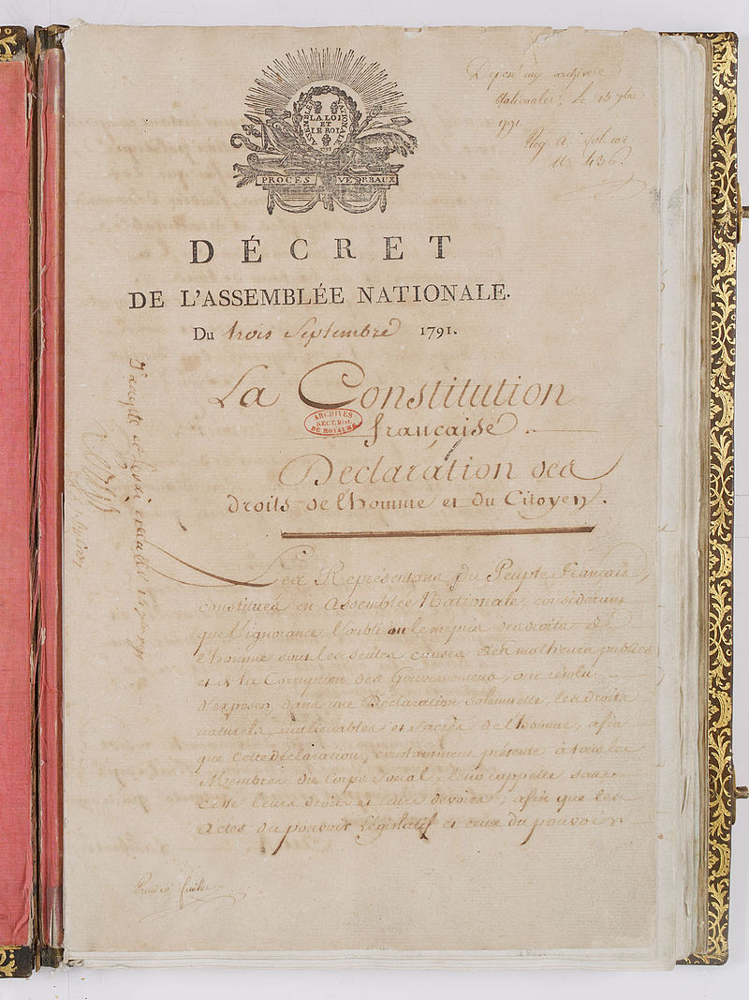
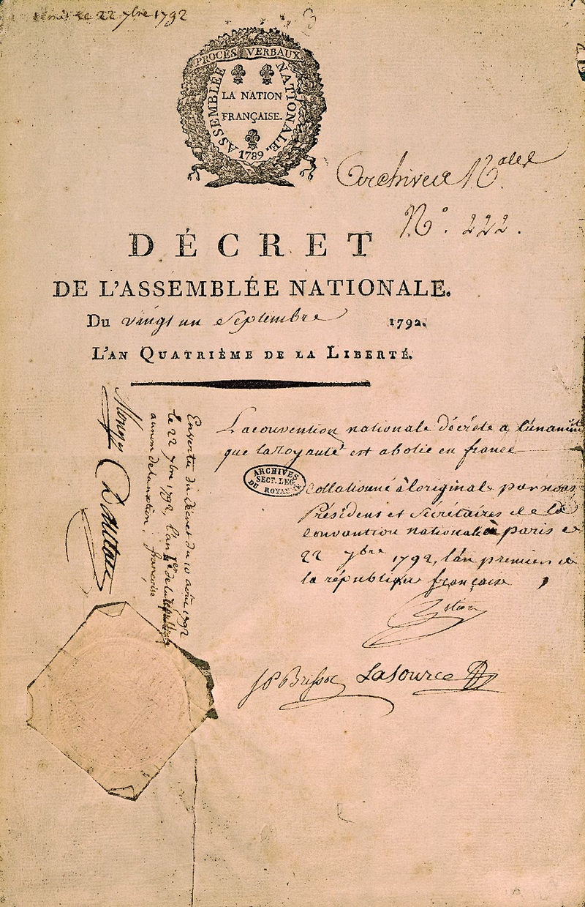
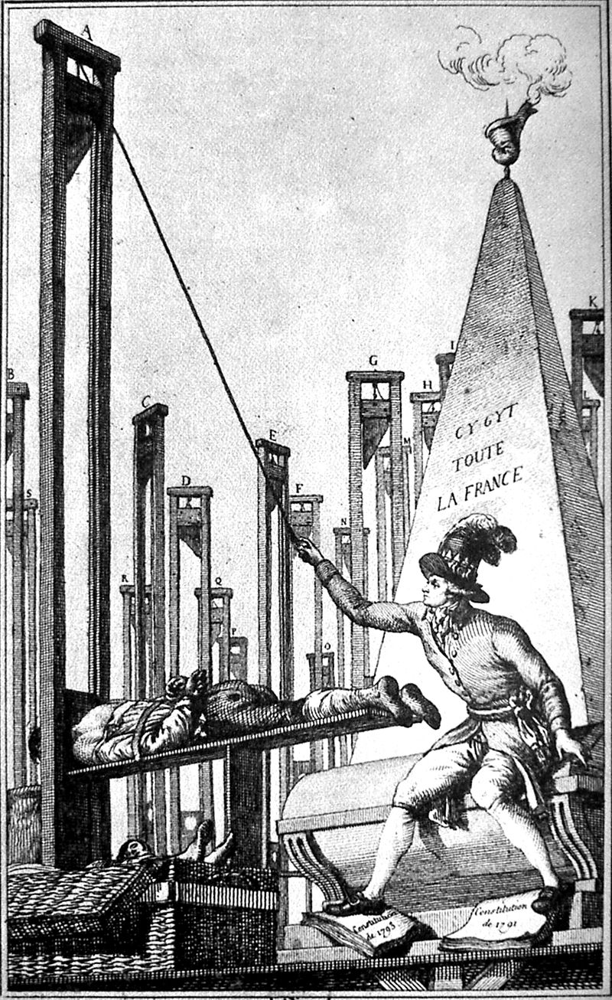
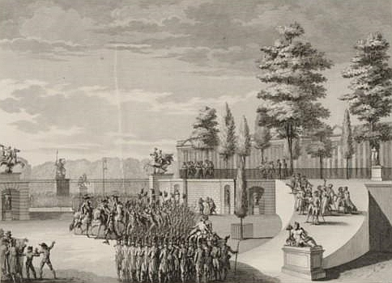

Deschiderea Adunarii Starilor Generale

5 mai 1789
Caderea Bastiliei

14 iulie 1789
Declaratia Drepturilor Omului si Cetateanului

26 august 1789
Adoptarea Primei Constitutii

3 septembrie 1791
Proclamarea Republicii

21 septembrie 1792
Instituirea teroriii

5 septembrie 1793
Directoratul

31 octombrie 1795